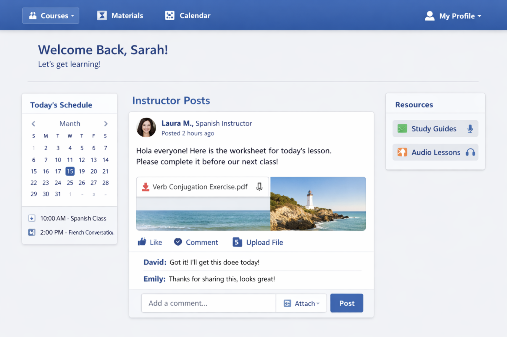
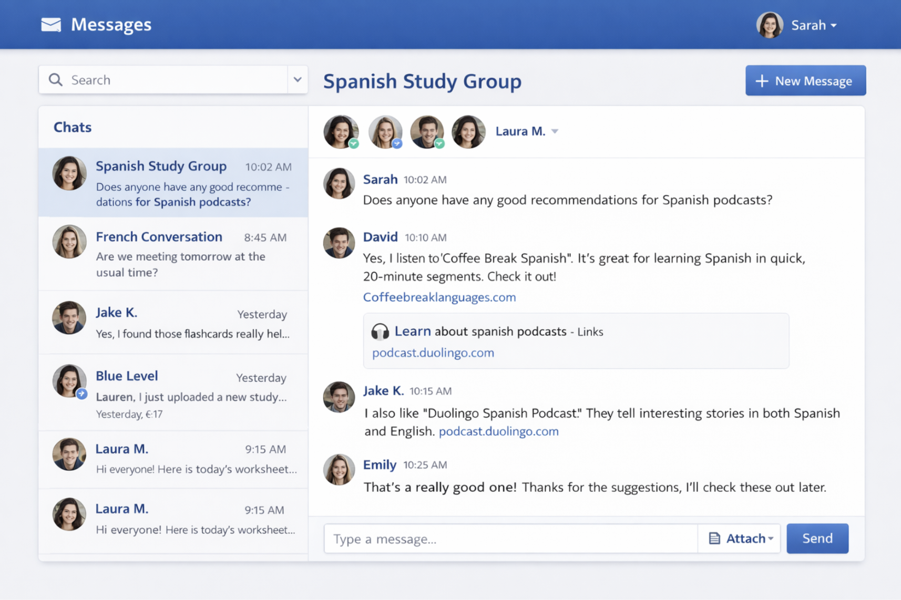
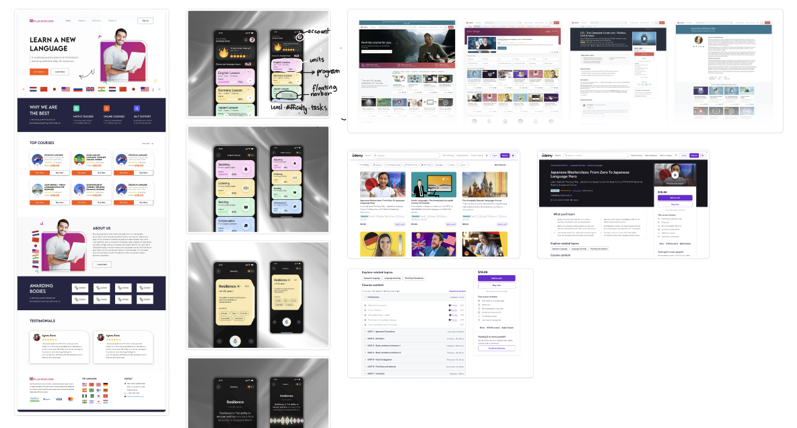
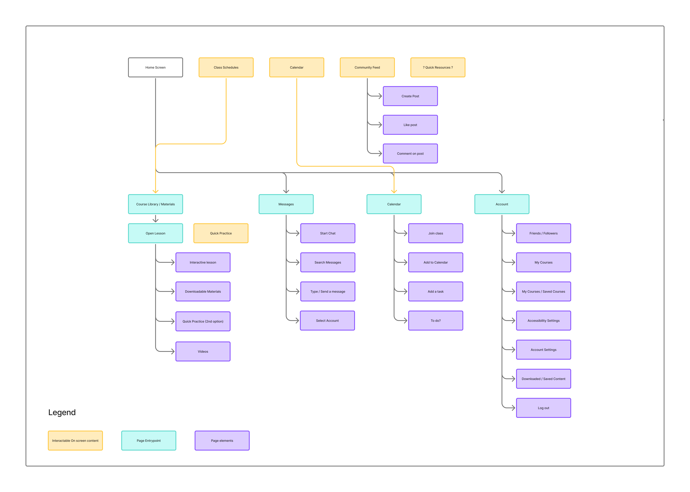
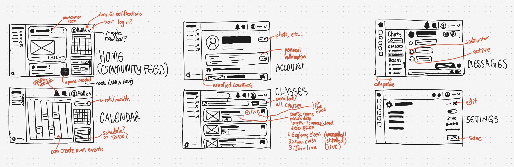

Auroworld
01 - User Research
Before any design work began, I needed to understand what the team had already envisioned. The developers came with a defined feature set and a rough idea of how it should be organized. To communicate that vision, they provided AI generated interface mockups showing the general layout they had in mind. These screens included a social feed for both instructors and participants, a calendar view so learners could see their upcoming classes at a glance, and a messaging system for communicating with instructors and exchanging homework attachments. Reviewing these mockups gave me an entry point into the team's mental model before I started forming my own.

Screen 1
Home feed and calendar sidebar

Screen 2
Messages
Reading through the AI mockups helped me understand not just what features the team wanted, but how they imagined users moving through the product. It gave me a clear picture of their priorities before I started asking questions.
With the team's feature priorities mapped out, I moved into competitive analysis. Udemy was the primary reference point the client had in mind, so I studied it alongside other language learning and online course platforms. I paid particular attention to how each product handled navigation, course discovery, and accessibility settings, since those would be the most critical areas to get right for a senior audience. Looking at what worked and what felt cluttered in existing products gave me a clearer baseline for where Auroworld needed to differentiate itself.

Competitive analysis referencing Udemy and similar language learning platforms
02 - Lo-Fi Prototype

Mapping the structure before touching the screen
Before sketching a single screen, I diagrammed the full information architecture and shared it with the team to confirm that my understanding of the product matched theirs. The diagram covered every major section, how they connected, and where key actions like enrolling in a course or viewing a calendar event would live. After a round of minor feedback, I used it as a blueprint to start sketching layouts.

Rough layouts to question early decisions
The lo-fi sketches were less about getting things right and more about surfacing the right questions early. Working through the layouts by hand forced decisions that would have been easy to defer: should the full calendar live on the home page, or is showing just the current day enough? What does a course card need to show before the user commits to clicking for more? Where do account settings, notifications, and messages belong without cluttering the primary nav? Answering these questions at the sketch stage kept them from becoming expensive problems later.
To keep the experience consistent across pages, I applied a one-third grid throughout: the left column for navigation, the center for primary content, and the right for supplementary information and controls. Keeping this structure constant meant users could orient themselves immediately on any screen without having to relearn the layout.
03 - Mid-Fi Prototype
With the structure established, I moved into Figma to build mid-fidelity screens. Rather than committing to a single direction, I created multiple variations of each page and presented them to the team for review. Because the developers and product manager had a much closer relationship with the intended users, their feedback carried real weight. They could tell me, with confidence, what would feel intuitive to a senior learner and what would not. The variations covered a range of decisions: how the accessibility settings panel should be presented, where a search filter would be least disruptive, and whether a weekly or daily calendar view would be more useful on the home screen. Each round of feedback narrowed the choices until we had a single direction that the whole team felt good about.


Mid-fi screens showing layout variations reviewed with the development team
Accessibility was a design constraint at every stage, not an afterthought. All body text was set above 16pt, interactive elements were sized for easy tapping, and card and button contrast ratios were tested to ensure legibility for users with reduced vision. These constraints shaped the visual system as much as any aesthetic decision.
04 - Final Design
The final design was built on a cohesive design system covering color, type, spacing, and components. The color palette centers on violet and lavender, a choice with two intentions: the warmth of the hues reflects the richness and cultural depth of language learning, while the cooler tones create a calm, low-pressure environment for seniors who might feel anxious picking up a new skill. The palette also provided strong contrast opportunities between surface colors, making cards, buttons, and interactive states easy to distinguish at a glance.
The typeface was selected for its clean geometry and strong legibility at large sizes. All body copy was set above 16pt and headers were scaled generously to reduce reading effort. Google Material Icons provided the iconography, bringing a set of familiar symbols that many users already recognize from other apps, which lowered the learning curve for navigating the interface without any added explanation.
Final design walkthrough
The goal throughout was to prove that accessible design and modern design are not competing priorities. Auroworld needed to feel polished and credible to attract instructors, while remaining clear and low-stress for the seniors actually using it. The final design tries to hold both of those things at once.